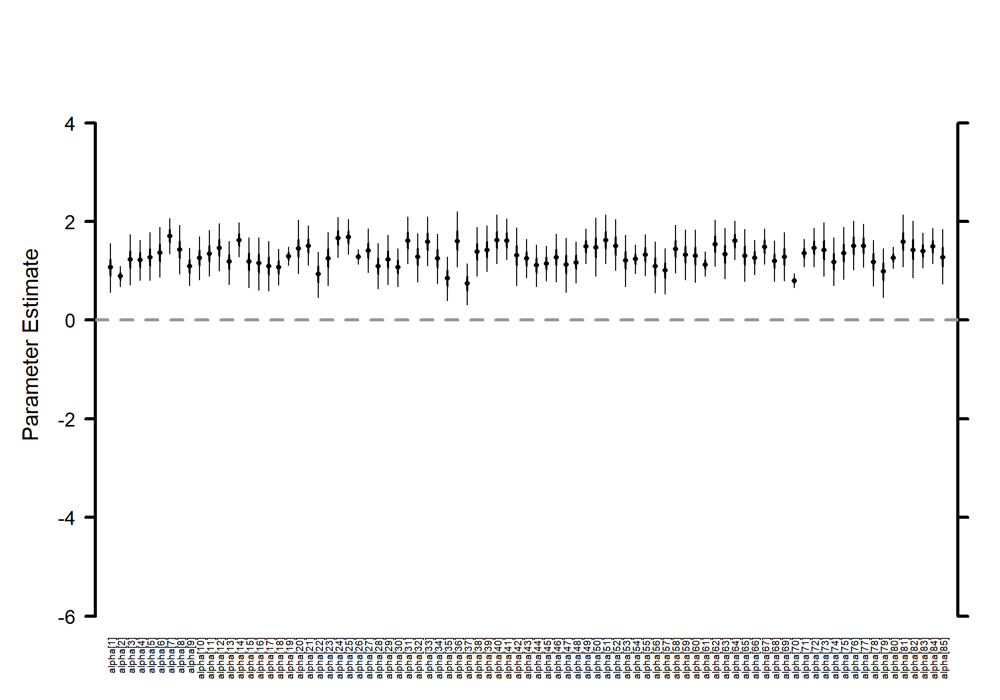
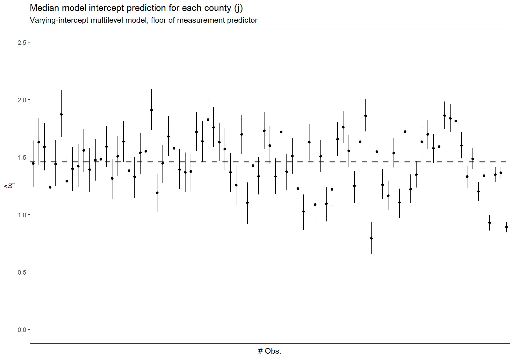

Chapter 3 Multilevel linear models: the basics (Ch 12)
This chapter starts on page 251
3.1 Setup
# bread-and-butter
library(tidyverse)
library(lubridate)
library(viridis)
library(scales)
library(latex2exp)
# visualization
library(cowplot)
library(kableExtra)
# Linear Mixed-Effects Models
library(lme4)
library(broom.mixed)
# jags and bayesian
library(rjags)
library(MCMCvis)
library(HDInterval)
library(BayesNSF)
#set seed
set.seed(11)3.2 Load data
# srrs2 <- read.table ("../data/radon/srrs2.dat", header=TRUE, sep=",")
srrs2 <- read.table ("http://www.stat.columbia.edu/~gelman/arm/examples/radon/srrs2.dat", header=TRUE, sep=",")
srrs2 %>%
dplyr::glimpse()Rows: 12,777
Columns: 25
$ idnum
# filter MN and create vars
radon_mn <- srrs2 %>%
dplyr::filter(
state=="MN"
) %>%
dplyr::mutate(
radon = activity
, log.radon = log(ifelse(radon==0, .1, radon))
, y = log.radon
, x = floor # 0 for basement, 1 for first floor
, county_index = as.numeric(as.factor(county))
)
# n
n <- nrow(radon_mn)
# count
radon_mn %>% dplyr::count(county_index, county) %>% dplyr::slice_head(n=10) %>%
kableExtra::kable(
caption = "Records by county (first 10)"
) %>%
kableExtra::kable_styling(font_size = 12) %>%
kableExtra::column_spec(1, bold = FALSE, width = "3em")| county_index | county | n |
|---|---|---|
| 1 | AITKIN | 4 |
| 2 | ANOKA | 52 |
| 3 | BECKER | 3 |
| 4 | BELTRAMI | 7 |
| 5 | BENTON | 4 |
| 6 | BIG STONE | 3 |
| 7 | BLUE EARTH | 14 |
| 8 | BROWN | 4 |
| 9 | CARLTON | 10 |
| 10 | CARVER | 6 |
3.3 Varying-intercept multilevel model, no predictors (p. 253)
\[ y_i = \alpha_{j[i]} + \epsilon_i \]
where \(j[i]\) is the county corresponding to house \(i\)
Partial-pooling estimates from a multilevel model: For this simple scenario with no predictors, the multilevel estimate for a given county \(j\) can be approximated as a weighted average of the mean of the observations in the county (the unpooled estimate, \(\overline{y}_j\)) and the mean over all counties (the completely pooled estimate, \(\overline{y}_{all}\)).
The weighted average reflects the relative amount of information available about the individual county, on one hand, and the average of all the counties, on the other:
- Averages from counties with smaller sample sizes carry less information, and the weighting pulls the multilevel estimates closer to the overall state average. In the limit, if \(n_j = 0\), the multilevel estimate is simply the overall average, \(\overline{y}_{all}\).
- Averages from counties with larger sample sizes carry more information, and the corresponding multilevel estimates are close to the county averages. In the limit as \(n_j \to \infty\), the multilevel estimate is simply the county average, \(\overline{y}_{j}\) .
- In intermediate cases, the multilevel estimate lies between the two extremes.
3.3.1 Data and Initial conditions
# varying-intercept model, no predictors
## data for jags
data <- list(
n = nrow(radon_mn)
, J = radon_mn$county %>% unique() %>% length()
, y = radon_mn$log.radon %>% as.double()
, county = radon_mn$county_index %>% as.double()
)
## inits for jags
inits <- function(){
list(
alpha = rnorm(n = data$J, mean = 0, sd = 1) # county-level intercept (n = length of # counties)
, mu.alpha = rnorm(n = 1, mean = 0, sd = 1)
, sigma.alpha = runif(n = 1, min = 0, max = 1)
, sigma.y = runif(n = 1, min = 0, max = 1)
)
}
# define parameters to return from MCMC
params <- c ("alpha", "mu.alpha", "sigma.y", "sigma.alpha")3.3.2 JAGS Model
Write out the JAGS code for the model.
## JAGS Model
model {
###########################
# priors
###########################
# alpha priors
mu.alpha ~ dnorm(0, .0001)
tau.alpha <- 1/sigma.alpha^2
sigma.alpha ~ dunif(0, 100)
for (j in 1:J){
alpha[j] ~ dnorm(mu.alpha, tau.alpha)
}
# y priors
sigma.y ~ dunif (0, 100)
tau.y <- 1/sigma.y^2
###########################
# likelihood
###########################
for (i in 1:n){
y[i] ~ dnorm(alpha[county[i]], tau.y)
}
}3.3.3 Implement JAGS Model
##################################################################
# insert JAGS model code into an R script
##################################################################
{ # Extra bracket needed only for R markdown files - see answers
sink("intrcpt_nopred.R") # This is the file name for the jags code
cat("
## JAGS Model
model {
###########################
# priors
###########################
# alpha priors
mu.alpha ~ dnorm(0, .0001)
tau.alpha <- 1/sigma.alpha^2
sigma.alpha ~ dunif(0, 100)
for (j in 1:J){
alpha[j] ~ dnorm(mu.alpha, tau.alpha)
}
# y priors
sigma.y ~ dunif (0, 100)
tau.y <- 1/sigma.y^2
###########################
# likelihood
###########################
for (i in 1:n){
y[i] ~ dnorm(alpha[county[i]], tau.y)
}
}
", fill = TRUE)
sink()
}
##################################################################
# implement model
##################################################################
######################
# Call to JAGS
######################
intrcpt_nopred = rjags::jags.model(
file = "intrcpt_nopred.R"
, data = data
, inits = inits
, n.chains = 3
, n.adapt = 100
)
stats::update(intrcpt_nopred, n.iter = 1000, progress.bar = "none")
# save the coda object (more precisely, an mcmc.list object) to R
mlm_intrcpt_nopred = rjags::coda.samples(
model = intrcpt_nopred
, variable.names = params
, n.iter = 1000
, n.thin = 1
, progress.bar = "none"
)3.3.4 Summary of the marginal posterior distributions of the parameters
# summary
MCMCvis::MCMCsummary(mlm_intrcpt_nopred, params = params[params != "alpha"]) %>%
kableExtra::kable(
caption = "Bayesian: arying-intercept multilevel model, no predictors"
, digits = 5
) %>%
kableExtra::kable_styling(font_size = 12)| mean | sd | 2.5% | 50% | 97.5% | Rhat | n.eff | |
|---|---|---|---|---|---|---|---|
| mu.alpha | 1.31365 | 0.04921 | 1.21825 | 1.31339 | 1.40908 | 1.00 | 930 |
| sigma.y | 0.79908 | 0.01856 | 0.76404 | 0.79905 | 0.83674 | 1.00 | 1791 |
| sigma.alpha | 0.31228 | 0.04843 | 0.22500 | 0.30981 | 0.40941 | 1.01 | 328 |
3.3.5 Make a horizontal caterpillar plot for the \(\alpha_{j}\)
# Caterpillar plots
MCMCvis::MCMCplot(
mlm_intrcpt_nopred
, params = c("alpha")
, horiz = FALSE
, ylim = c(-6,5)
# Number specifying size of text for parameter labels on axis.
, sz_labels = 0.6
# Number specifying size of points represents posterior medians.
, sz_med = 0.7
# Number specifying thickness of 50 percent CI line (thicker line).
, sz_thick = 2
# Number specifying thickness of 95 percent CI line (thinner line).
, sz_thin = 1
)
3.3.6 Sort the \(\alpha_{j}\) by number of obs.
Replicate Figure 12.1 (b) (p.253)
dta_temp <- dplyr::bind_cols(
radon_mn %>% dplyr::count(county_index) %>% data.frame()
, MCMCvis::MCMCpstr(mlm_intrcpt_nopred, params = "alpha", func = function(x) quantile(x, c(0.25, 0.5, 0.75))) %>%
data.frame() %>%
dplyr::rename_with(
~ tolower(gsub(".", "", .x, fixed = TRUE))
)
) %>%
dplyr::arrange(n) %>%
dplyr::mutate(n_low_hi = dplyr::row_number() %>% as.factor())
ggplot(dta_temp) +
geom_hline(
yintercept = MCMCvis::MCMCpstr(mlm_intrcpt_nopred, params = "mu.alpha", func = median) %>% unlist()
, linetype = "dashed"
, lwd = 1
, color = "gray40"
) +
geom_point(
mapping = aes(x = n_low_hi, y = alpha50)
) +
geom_linerange(
mapping = aes(x = n_low_hi, ymin = alpha25, ymax = alpha75)
) +
scale_y_continuous(limits = c(0,2.5)) +
ylab(latex2exp::TeX("$\\hat{\\alpha}_{j}$")) +
xlab("# Obs.") +
labs(
title = "Median model intercept prediction for each county (j)"
, subtitle = "Varying-intercept multilevel model, no predictors"
) +
theme_bw() +
theme(
axis.text.x = element_blank()
, axis.ticks.x = element_blank()
, panel.grid = element_blank()
)
3.4 Classical no-pooling with predictors (p. 254)
This section considers partial pooling for a model with unit-level predictors. In this scenario, no pooling might refer to fitting a separate regression model within each group. However, a less extreme and more common option that we also sometimes refer to as “no pooling” is a model that includes group indicators and estimates the model classically.
3.4.1 Fit no-pooling model with lm
\[ y_i = \alpha_{j[i]} + \beta\cdot x_i + \epsilon_i \]
where \(j[i]\) is the county corresponding to house \(i\); and \(x\) is the floor of measurement (0 = basement, 1 = 1st floor…)
To fit the no-pooling model in R, we include the county index (a variable named county that takes on values between 1 and 85) as a factor in the regression—thus, predictors for the 85 different counties. We add “−1” to the regression formula to remove the constant term, so that all 85 counties are included. Otherwise, R would use county 1 as a baseline.
In the no-pooling model, the \(\alpha_{j}\)’s are set to the classical least squares estimates, which correspond to the fitted intercepts in a model run separately in each county (with the constraint that the slope coefficient equals \(\beta\) in all models).
lm(data = radon_mn, formula = y ~ x + factor(county_index) - 1) %>%
broom::tidy() %>%
dplyr::slice_head(n=10) %>%
kableExtra::kable(
caption = "no-pooling model includes county indicators"
) %>%
kableExtra::kable_styling(font_size = 12) %>%
kableExtra::column_spec(1, bold = FALSE, width = "3em")| term | estimate | std.error | statistic | p.value |
|---|---|---|---|---|
| x | -0.7205390 | 0.0735232 | -9.800158 | 0.0000000 |
| factor(county_index)1 | 0.8405411 | 0.3786561 | 2.219801 | 0.0267009 |
| factor(county_index)2 | 0.8748191 | 0.1049822 | 8.333020 | 0.0000000 |
| factor(county_index)3 | 1.5286973 | 0.4394610 | 3.478573 | 0.0005302 |
| factor(county_index)4 | 1.5527222 | 0.2889702 | 5.373296 | 0.0000001 |
| factor(county_index)5 | 1.4325705 | 0.3786561 | 3.783302 | 0.0001658 |
| factor(county_index)6 | 1.5130101 | 0.4367190 | 3.464493 | 0.0005584 |
| factor(county_index)7 | 2.0121604 | 0.2024343 | 9.939820 | 0.0000000 |
| factor(county_index)8 | 1.9895765 | 0.3799921 | 5.235836 | 0.0000002 |
| factor(county_index)9 | 1.0030369 | 0.2393138 | 4.191304 | 0.0000307 |
3.5 MLM Partial pooling with predictors (p. 254)
The simplest multilevel model for the radon data with the floor predictor can be written as:
\[\begin{align*} y_i \sim \textrm{N}(\alpha_{j[i]} + \beta\cdot x_i, \sigma^2) \\ \textrm{for} &\; i = 1, \cdots, n \end{align*}\]
which looks like the no-pooling model but with one key difference. In the no-pooling model, the \(\alpha_{j}\)’s are set to the classical least squares estimates, which correspond to the fitted intercepts in a model run separately in each county (with the constraint that the slope coefficient equals \(\beta\) in all models). In the multilevel model, a “soft constraint” is applied to the \(\alpha_{j}\)’s: they are assigned a probability distribution,
\[\begin{align*} \alpha_j &\sim \textrm{N}(\mu_{\alpha}, \sigma^{2}_{\alpha}) \\ \textrm{for} &\; j = 1, \cdots, J \end{align*}\]
with their mean \(\mu_{\alpha}\) and standard deviation \(\sigma^{2}_{\alpha}\) estimated from the data. The distribution (12.3) has the effect of pulling the estimates of \(\alpha_{j}\) toward the mean level \(\mu_{\alpha}\), but not all the way. (p. 257)
3.5.1 Using lme4::lmer
## Varying-intercept model w/ no predictors
M0 <- lme4::lmer(data = radon_mn, formula = y ~ 1 + (1 | county))
summary(M0)Linear mixed model fit by REML [‘lmerMod’] Formula: y ~ 1 + (1 | county) Data: radon_mn
REML criterion at convergence: 2259.4
Scaled residuals: Min 1Q Median 3Q Max -4.4661 -0.5734 0.0441 0.6432 3.3516
Random effects:
Groups Name Variance Std.Dev.
county (Intercept) 0.09581 0.3095
Residual 0.63662 0.7979
Number of obs: 919, groups: county, 85
Fixed effects: Estimate Std. Error t value (Intercept) 1.31258 0.04891 26.84
## Including x as a predictor
M1 <- lme4::lmer(data = radon_mn, formula = y ~ x + (1 | county))
summary(M1)Linear mixed model fit by REML [‘lmerMod’] Formula: y ~ x + (1 | county) Data: radon_mn
REML criterion at convergence: 2171.3
Scaled residuals: Min 1Q Median 3Q Max -4.3989 -0.6155 0.0029 0.6405 3.4281
Random effects:
Groups Name Variance Std.Dev.
county (Intercept) 0.1077 0.3282
Residual 0.5709 0.7556
Number of obs: 919, groups: county, 85
Fixed effects: Estimate Std. Error t value (Intercept) 1.46160 0.05158 28.339 x -0.69299 0.07043 -9.839
Correlation of Fixed Effects: (Intr) x -0.288
#estimated regression coefficicents
coef(M1)$county[1:3,1][1] 1.1915004 0.9276468 1.4792143
# fixed and random effects
fixef(M1)(Intercept) x 1.4615979 -0.6929937
ranef(M1)$county[1:3,1][1] -0.27009750 -0.53395107 0.01761646
# check
fixef(M1)[[1]] + ranef(M1)$county[1,1][1] 1.1915
coef(M1)$county[1,1][1] 1.1915
3.5.2 Bayesian
3.5.2.1 Data and Initial conditions
# varying-intercept model, no predictors
## data for jags
data <- list(
n = nrow(radon_mn)
, J = radon_mn$county %>% unique() %>% length()
, y = radon_mn$log.radon %>% as.double()
, x = radon_mn$x %>% as.double()
, county = radon_mn$county_index %>% as.double()
)
## inits for jags
inits <- function(){
list(
alpha = rnorm(n = data$J, mean = 0, sd = 1) # county-level intercept (n = length of # counties)
, beta = rnorm(1, mean = 0, sd = 1)
, mu.alpha = rnorm(n = 1, mean = 0, sd = 1)
, sigma.alpha = runif(n = 1, min = 0, max = 1)
, sigma.y = runif(n = 1, min = 0, max = 1)
)
}
# define parameters to return from MCMC
params <- c ("alpha", "beta", "mu.alpha", "sigma.y", "sigma.alpha")3.5.2.2 JAGS Model
Write out the JAGS code for the model.
## JAGS Model
model {
###########################
# priors
###########################
# alpha priors
mu.alpha ~ dnorm(0, .0001)
tau.alpha <- 1/sigma.alpha^2
sigma.alpha ~ dunif(0, 100)
for (j in 1:J){
alpha[j] ~ dnorm(mu.alpha, tau.alpha)
}
# beta
beta ~ dnorm(0, .0001)
# y priors
sigma.y ~ dunif (0, 100)
tau.y <- 1/sigma.y^2
###########################
# likelihood
###########################
for (i in 1:n){
mu.y[i] <- alpha[county[i]] + beta * x[i]
y[i] ~ dnorm(mu.y[i], tau.y)
}
}3.5.2.3 Implement JAGS Model
##################################################################
# insert JAGS model code into an R script
##################################################################
{ # Extra bracket needed only for R markdown files - see answers
sink("intrcpt_pred.R") # This is the file name for the jags code
cat("
## JAGS Model
model {
###########################
# priors
###########################
# alpha priors
mu.alpha ~ dnorm(0, .0001)
tau.alpha <- 1/sigma.alpha^2
sigma.alpha ~ dunif(0, 100)
for (j in 1:J){
alpha[j] ~ dnorm(mu.alpha, tau.alpha)
}
# beta
beta ~ dnorm(0, .0001)
# y priors
sigma.y ~ dunif (0, 100)
tau.y <- 1/sigma.y^2
###########################
# likelihood
###########################
for (i in 1:n){
mu.y[i] <- alpha[county[i]] + beta * x[i]
y[i] ~ dnorm(mu.y[i], tau.y)
}
}
", fill = TRUE)
sink()
}
##################################################################
# implement model
##################################################################
######################
# Call to JAGS
######################
intrcpt_pred = rjags::jags.model(
file = "intrcpt_pred.R"
, data = data
, inits = inits
, n.chains = 3
, n.adapt = 100
)
stats::update(intrcpt_pred, n.iter = 1000, progress.bar = "none")
# save the coda object (more precisely, an mcmc.list object) to R
mlm_intrcpt_pred = rjags::coda.samples(
model = intrcpt_pred
, variable.names = params
, n.iter = 1000
, n.thin = 1
, progress.bar = "none"
)3.5.2.4 Summary of the marginal posterior distributions of the parameters
# summary
MCMCvis::MCMCsummary(mlm_intrcpt_pred, params = params[params != "alpha"]) %>%
kableExtra::kable(
caption = "Bayesian: Varying-intercept multilevel model, floor of measurement predictor"
, digits = 5
) %>%
kableExtra::kable_styling(font_size = 12)| mean | sd | 2.5% | 50% | 97.5% | Rhat | n.eff | |
|---|---|---|---|---|---|---|---|
| beta | -0.69408 | 0.07026 | -0.83349 | -0.69416 | -0.55764 | 1 | 1502 |
| mu.alpha | 1.46351 | 0.05304 | 1.36035 | 1.46300 | 1.56758 | 1 | 857 |
| sigma.y | 0.75741 | 0.01819 | 0.72298 | 0.75704 | 0.79382 | 1 | 1759 |
| sigma.alpha | 0.33626 | 0.04789 | 0.24771 | 0.33418 | 0.43834 | 1 | 421 |
Compare fully Bayesian approach to linear mixed-effects model (via Restricted Maximum Likelihood [REML])
# compare
MCMCvis::MCMCsummary(mlm_intrcpt_pred, params = "alpha") %>%
data.frame() %>%
dplyr::select("mean") %>%
dplyr::slice_head(n = 8) %>%
dplyr::bind_cols(coef(M1)$county[1:8,1]) %>%
dplyr::rename(Bayesian=1, LMM=2) %>%
kableExtra::kable(
caption = "alpha predictions Bayesian vs. LMM"
, digits = 5
) %>%
kableExtra::kable_styling(font_size = 12)| Bayesian | LMM | |
|---|---|---|
| alpha[1] | 1.18900 | 1.19150 |
| alpha[2] | 0.92747 | 0.92765 |
| alpha[3] | 1.49063 | 1.47921 |
| alpha[4] | 1.50568 | 1.50450 |
| alpha[5] | 1.44939 | 1.44615 |
| alpha[6] | 1.49025 | 1.48018 |
| alpha[7] | 1.85705 | 1.85813 |
| alpha[8] | 1.68957 | 1.68277 |
3.5.2.5 Sort the \(\alpha_{j}\) by number of obs.
Replicate Figure 12.1 (b) (p.253)
dta_temp <- dplyr::bind_cols(
radon_mn %>% dplyr::count(county_index) %>% data.frame()
, MCMCvis::MCMCpstr(mlm_intrcpt_pred, params = "alpha", func = function(x) quantile(x, c(0.25, 0.5, 0.75))) %>%
data.frame() %>%
dplyr::rename_with(
~ tolower(gsub(".", "", .x, fixed = TRUE))
)
) %>%
dplyr::arrange(n) %>%
dplyr::mutate(n_low_hi = dplyr::row_number() %>% as.factor())
ggplot(dta_temp) +
geom_hline(
yintercept = MCMCvis::MCMCpstr(mlm_intrcpt_pred, params = "mu.alpha", func = median) %>% unlist()
, linetype = "dashed"
, lwd = 1
, color = "gray40"
) +
geom_point(
mapping = aes(x = n_low_hi, y = alpha50)
) +
geom_linerange(
mapping = aes(x = n_low_hi, ymin = alpha25, ymax = alpha75)
) +
scale_y_continuous(limits = c(0,2.5)) +
ylab(latex2exp::TeX("$\\hat{\\alpha}_{j}$")) +
xlab("# Obs.") +
labs(
title = "Median model intercept prediction for each county (j)"
, subtitle = "Varying-intercept multilevel model, floor of measurement predictor"
) +
theme_bw() +
theme(
axis.text.x = element_blank()
, axis.ticks.x = element_blank()
, panel.grid = element_blank()
)